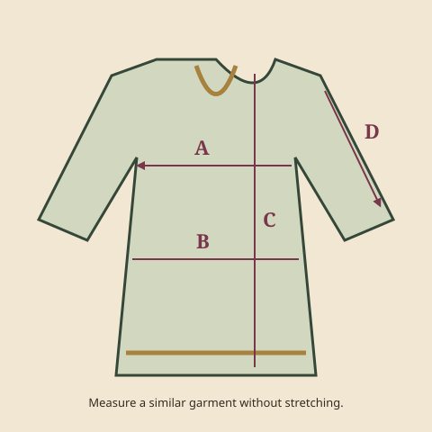

← The collectionA LITTLE GUIDANCE, BEFORE YOU CHOOSE
Feel more at home
in your next favourite.
A size letter is only a starting point. The cut, fabric and way you like to wear a piece all matter.

Start with a garment you love.
- Choose a similar shirt or dress that fits the way you like. Lay it flat without stretching.
- Measure across the chest and hip on one side. These are garment widths, not measurements around your body.
- Measure shoulder to hem for length, and shoulder seam to cuff for sleeve length.
- Compare with the chart on the exact product page. Switch between inches and centimetres if useful. Ask about any missing dimensions before ordering.
Allow for how you prefer to move and layer. A garment measurement cannot guarantee fit, and the same size letter may differ between cuts.
UNSTITCHED
A little planning with your tailor.
Check the length and width of every fabric panel, the pieces supplied and any separate patches. Show your tailor the design you have in mind before choosing: fabric requirements depend on the cut and your measurements.
“Custom Unstitched” is a fabric option, not a custom stitching service.
FABRIC & FINISH
Look beyond the name.
A fabric family is a browsing aid. For your particular outfit, check the stated fibre composition, lining, opacity and care instructions. Ask for a close-up or a daylight photo if the texture or colour is difficult to judge.
Consider the weather where you live, your daily routine and any layers you plan to wear.
WHAT ARRIVES
Count the pieces, not the accessories.
A styled photograph may show jewellery, footwear or an inner layer. Read the included and excluded pieces before you order, and confirm whether the dupatta and trousers are supplied.
Product photographs should show the actual outfit. Decorative artwork elsewhere on this site is part of our visual identity.
BEFORE YOU ORDER
Make room for peace of mind.
Check the delivery city, dispatch guidance, final amount and return arrangements. If you are dressing for a fixed date, ask about arrival timing before placing the order; dispatch and delivery are different steps.
Explore the contact preview ↗